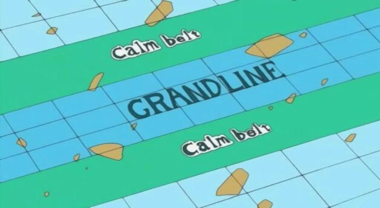
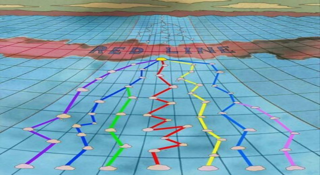

História
O mundo de One Piece é composto por quatro mares, que estão divididos por um grande relevo rochoso de aparência avermelhada. No meio dela, está o maior e o mais temido oceano de todos, a Grand Line. Vamos conhecer agora os quatro mares que estão em volta da Red Line: Ao redor da Red Line, estão quatro mares. Eles são chamados de: North Blue, South Blue, West Blue e East Blue (Na tradução ficaria Norte Azul, Sul Azul, Oeste Azul e Leste Azul).
O Calm Belt é um mar muito temido pelos piratas que desejam atravessar a Red Line. Ele cerca ela dos dois lados. O nome Calm vem de calmo, pois nessa região não corre nem um vento ou se quer existe alguma corrente de ar. Por esse motivo, é impossível atravessa-lo, pois sem vento não é possível movimentar a vela do navio. Mas esse também não é o problema. Ainda tem muitos perigos.
Os "Chapéus de Palha" foram nomeados assim devido a assinatura de Luffy, seu chapéu, que foi dado a ele por Shanks, o Ruivo. Eles foram referidos assim pela primeira vez por Smoker em Alabasta. A tripulação navegou no Going Merry, o primeiro navio oficial dos Chapéus de Palha, até o Arco Water 7. Durante o Arco Pós-Enies Lobby, Franky e Iceburg construíram um novo navio que foi chamado de Thousand Sunny por Iceberg, embora os membros lutassem por nomes diferentes. Os Chapéus de Palha atualmente consistem em dez membros cujas recompensas combinadas são iguais 3.161,000,100.
A Red Line (Linha Vermelha) divide os quatros mares que a rodeiam. Para passar por ela, existe uma passagem que sobe ela como se fosse uma montanha. Essa passagem é chamada de Montanha Reversa. É como se a corrente marítima ao chegar naquele ponto, começasse a subir. Mas naquela região o tempo é muito estável e deve-se pegar o momento certo para se entrar na passagem, pois a corrente é muito forte. Se errar, o návio irá bater nela e consequentemente será feito em pedaços. No seu topo está o centro do Governo Mundial, que fica localizado na cidade sagrada de Mariejois. Ao chegar no topo, a corrente irá descer, assim é só pegar o embalo e atravessar. Pronto, agora estamos na temida Grand Line.
New Word (Novo Mundo) é o nome dado para a segunda parte da Grand Line. Sim, ela ainda sofre uma divisão pela Red Line. Para chegar lá, os piratas devem cobrir seu návio com uma bolha, processo chamado de Revestimento, assim eles passam por baixo da água, atravessam a Ilha dos Tritões e depois sobem de novo. A Marinha já tem uma rota marítima para passar por lá. Essa é a última parte para chegar em Raftel. É também a parte mais perigosa do mundo. É onde estão os Yonkous também. O único a explorar o novo mundo por inteiro, foi o Rei dos Piratas Gol D. Roger e sua tripulação. O clima é mais estável que nunca, e o Log Pose nem registra o campo magnético de cada Ilha, sendo assim, é usado um Log Pose diferente. Lembrem-se, é lá que teremos um novo Rei dos Piratas !